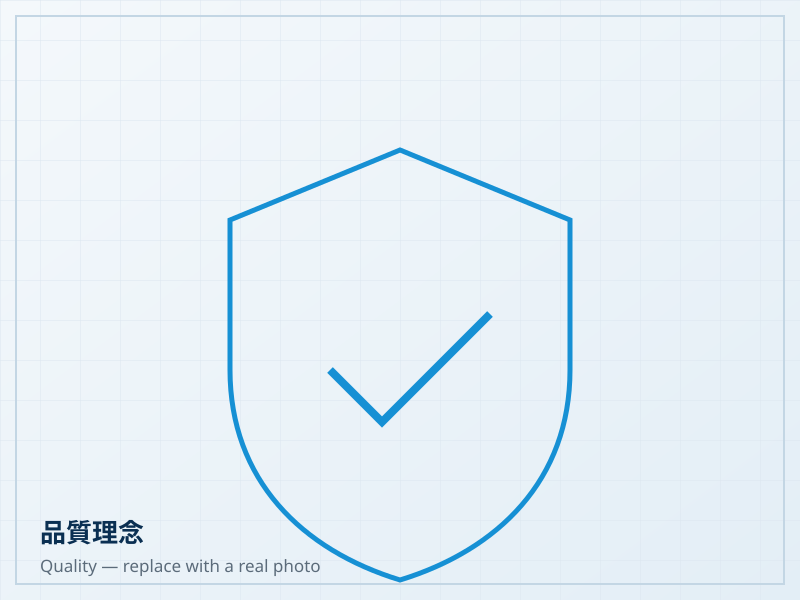

About Fine Reputation
關於九譽有限公司
A Taiwanese wastewater treatment equipment supplier founded in 1996 — from equipment distribution to in-house product development.
Company Profile
Fine Reputation Co., Ltd. was founded in 1996 as a professional supplier of wastewater treatment equipment in Taiwan.
In its early years the company supplied Taiwan-made sludge dewatering machines, blowers and aeration equipment to domestic engineering companies, and exported these products to Southeast Asia.
As market and customer requirements grew, Fine Reputation began importing industrial equipment and water treatment products from Europe and the United States, while also investing in its own product development and manufacturing.
Building on years of hands-on experience with wastewater treatment equipment, the company continues to develop products that balance quality, performance and reasonable cost.

Milestones
Fine Reputation established
The company started by supplying Taiwan-made water treatment equipment to domestic engineering companies, and began developing the Southeast Asian market.
- Sludge dewatering machines
- Blowers
- Aeration equipment
Importing equipment from Europe and the US
The company progressively introduced water treatment equipment and related products from advanced industrial countries in Europe and the United States, broadening its supply range.
Diffuser R&D and production begins
Development and production of disc diffusers started, with a team covering several professional fields.
- Chemical engineering
- Mechanical engineering
- Mould making
- Hands-on wastewater equipment experience
Continuous testing and improvement
Over six years the product was validated for materials and performance, and revised according to real user feedback.
- Membrane material testing
- Diffusion performance improvement
- Structural revision
- Field testing with users
- User feedback
Diffuser matured and exported in volume
The diffuser design matured and began to be exported to Southeast Asia in volume, earning repeat orders from overseas customers.
Our Strengths
Proven experience
Since 1996 we have accumulated years of experience with water treatment equipment, covering both domestic engineering projects and overseas markets.
Integrated expertise
Our team spans chemical engineering, mechanical engineering, mould making and water treatment applications — from design office to site.
Consistent quality
Products are improved continuously through testing and real customer feedback, rather than being frozen after a single design round.
Reasonable cost
We balance performance, quality and market price to help customers control overall project cost.
Quality Philosophy
Our product development comes from practice: equipment is used on real wastewater treatment sites first, then revised according to user feedback. The disc diffuser took six years — from R&D in 2004 to a mature design in 2010 — of membrane material testing, diffusion performance improvement and structural revision.
We believe the value of water treatment equipment lies in stable long-term operation, not only in the specification sheet at the factory gate. During selection we therefore prefer to understand the site first — tank dimensions, water quality, operating hours and maintenance conditions — before recommending a configuration.

Looking for the right water treatment equipment?
Tell us your site conditions and treatment requirements — we will help evaluate a suitable configuration.